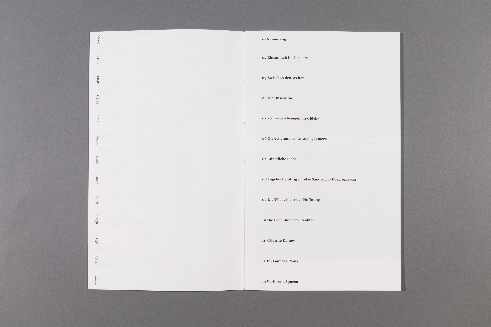
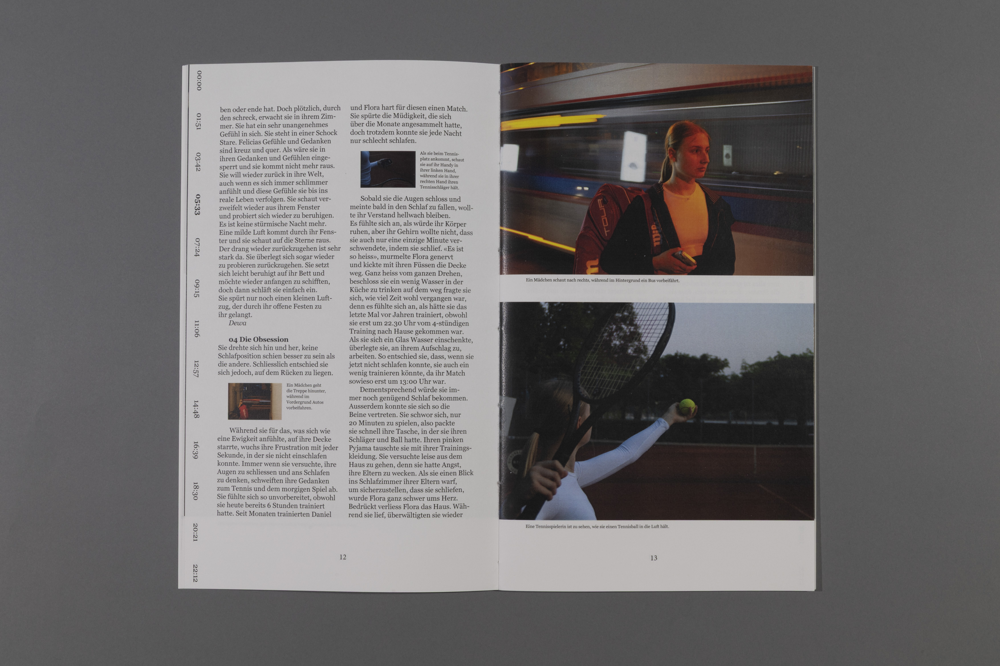
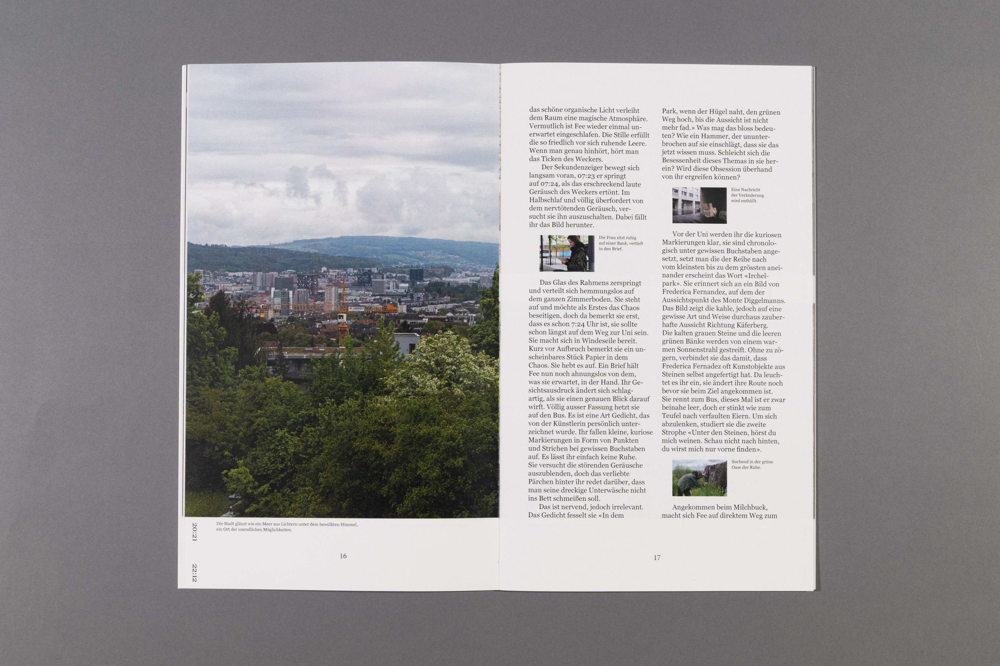
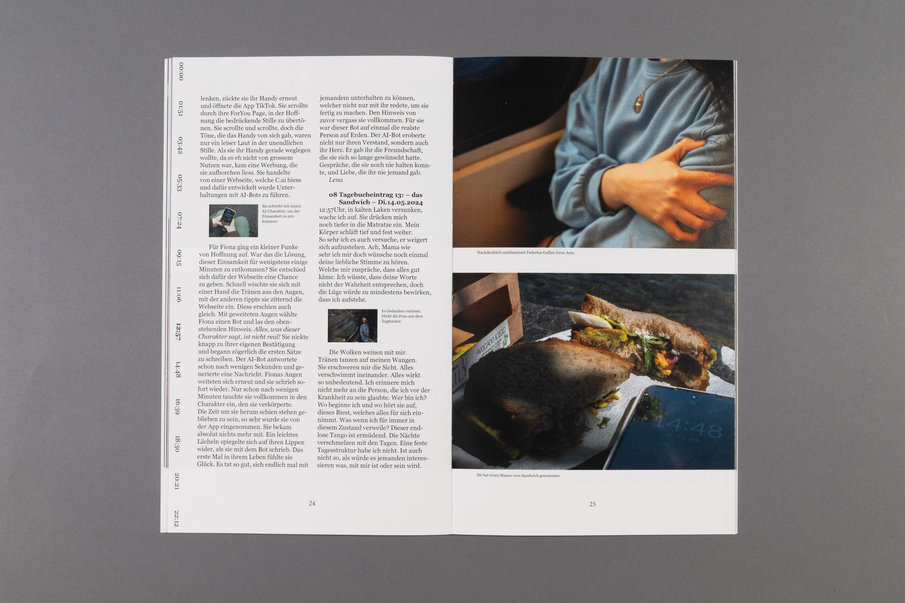
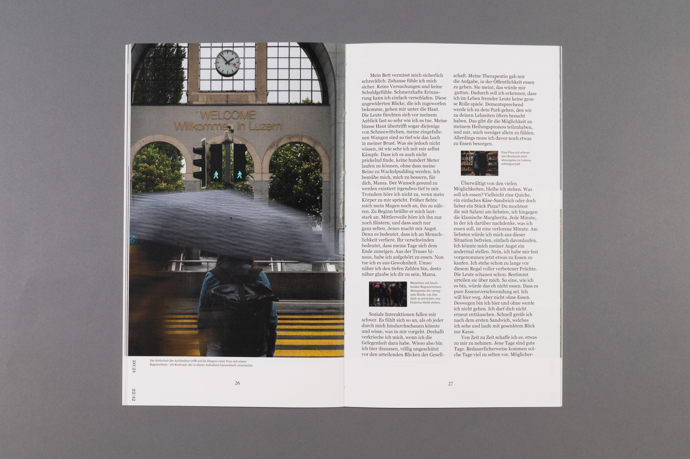
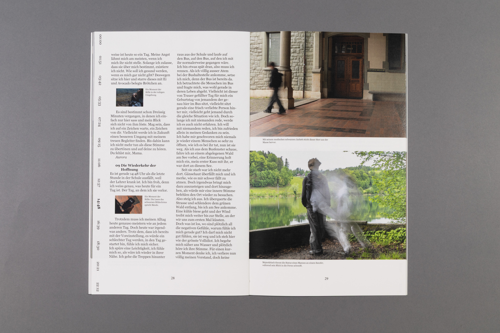
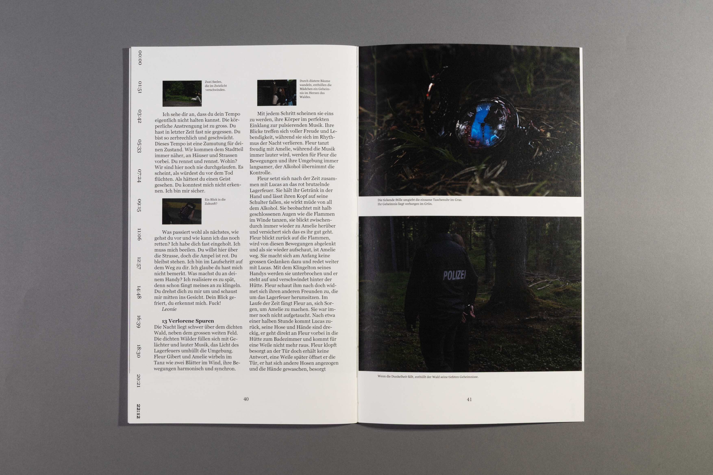
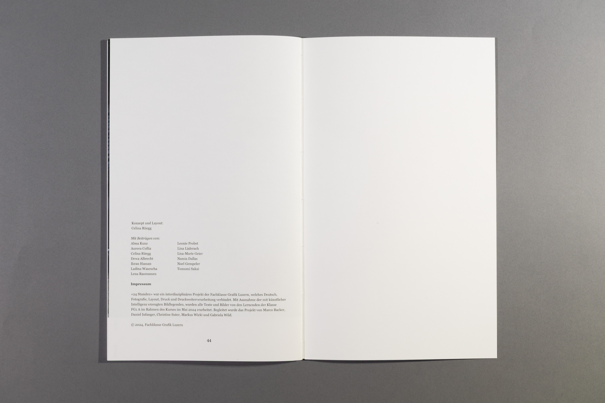
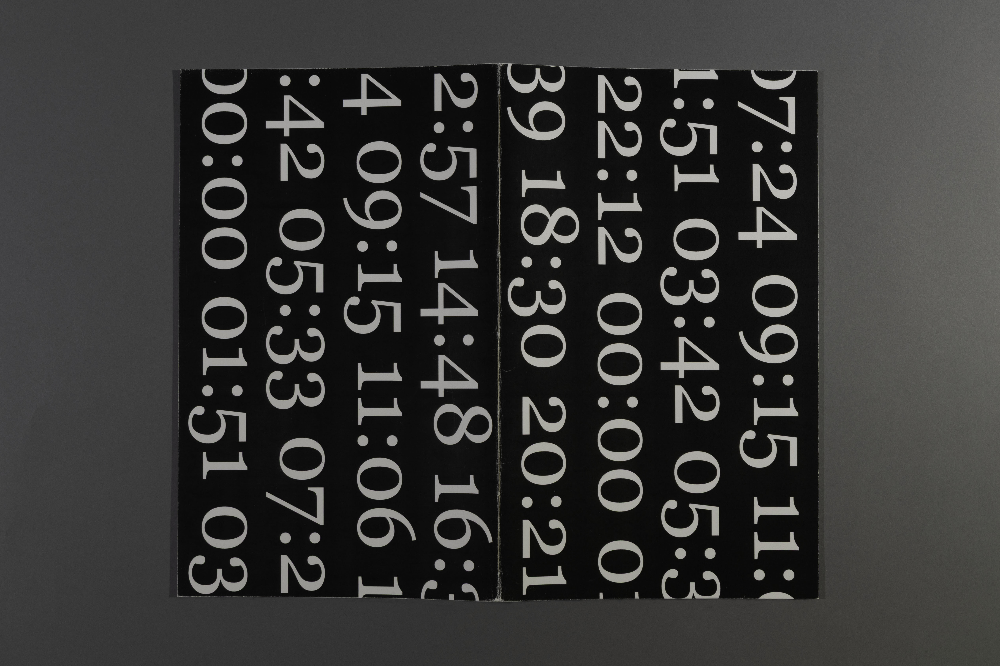

24h

How much happens in just 24 hours? The project is based on the concept by artist Christian Marclay and his work "The Clock". Within the class, each person was assigned a specific time and developed a short story with an accompanying photo series. The resulting contributions were compiled into a book structured according to a chronological timeline. Marked times connect text and images into a coherent sequence. The result is a visual collection of parallel actions that illustrates the simultaneity of human experience.










Editorial Design
Format: 180x297mm
Pages: 44
Language: German
Lecturers: Markus Wicki, Christine Suter
May 2024
Format: 180x297mm
Pages: 44
Language: German
Lecturers: Markus Wicki, Christine Suter
May 2024